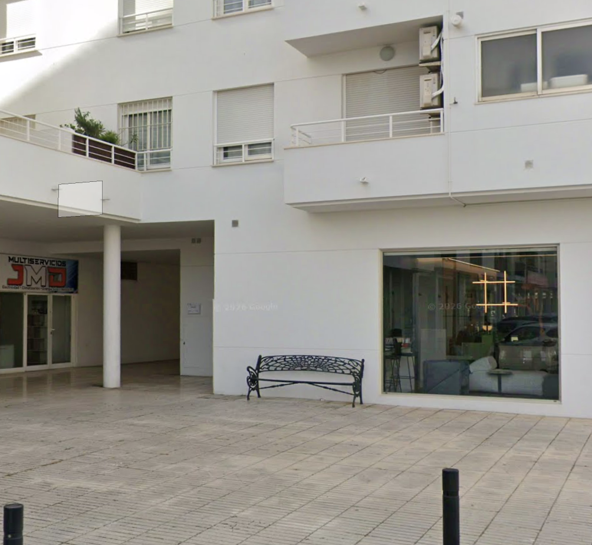

Llegada
El apartamento está en el centro de Altea, en un edificio moderno a ciento cincuenta metros del paseo marítimo y a doscientos de los supermercados. La entrada es a partir de las 14:00.

Parking
Tienes plaza privada en el garaje del sótano, incluida en el alquiler. No hace falta que busques aparcamiento en la calle, que en verano es prácticamente imposible por esta zona.
Ver en el mapa →
El apartamento
- WiFi
- WifiCristina
- Contraseña
- Alteahome
Fibra de 600 Mb, de sobra para trabajar o ver series.
Distribución
Dos dormitorios, uno con cama de matrimonio grande y otro con dos camas individuales, y un baño con ducha y bañera. El salón integra la cocina con barra americana, y de ahí se sale a la gran terraza, con vistas al mar y a la montaña. La terraza se aprovecha igual en verano que en invierno.
Electrodomésticos
Televisión por satélite con muchos canales en alemán, inglés y francés, además de Netflix. Lavadora, lavavajillas, microondas y cafetera. Aire acondicionado para el verano y radiadores para el invierno. La ropa de cama y las toallas están puestas.
Basura
La basura se tira en la zona habilitada para ello en la Plaza dels Sports.
Playa y paseo
A ciento cincuenta metros arranca el paseo marítimo de Altea, con la playa nueva, restaurantes y heladerías. Es llano y largo, y al atardecer se llena de gente paseando. Ésa es la gracia de estar aquí: no hace falta coger el coche para nada.
Las playas de Altea son de piedras, como casi todas las de por aquí. Si buscas arena, las más cercanas están en el apartado de qué ver.
- Platja de l'Espigó150 m Ver en el mapa →
Dónde comer
Casco antiguo
Se sube andando desde el apartamento en unos diez minutos, por las callejuelas empedradas. Los tres están a un paso unos de otros. Merece la pena reservar en temporada.
- Stromboli€€ Ver en el mapa →
- Oustau de Altea€€€ Ver en el mapa →
- Casa Vital€€ Ver en el mapa →
Paseo marítimo
Lo tienes a ciento cincuenta metros y está lleno de sitios. Éstos son los que recomendamos.
- Bon Vent · Club Náutico de Altea€€€ Ver en el mapa →
- La Terraza by Helen€€ Ver en el mapa →
- QUINOA Altea Beach€€ Ver en el mapa →
- Sushi Bar JT Ryokucha€€ Ver en el mapa →
- Asambra · Bar de Tapas€€ Ver en el mapa →
Merece el coche
- L'Olleta · Club del Mar€€€ Ver en el mapa →
- Ca Toni · Altea la Vella€€ Ver en el mapa →
- Melitón Jardín · Altea la Vella€€ Ver en el mapa →
Compras
Lo tienes todo a doscientos metros, así que la compra se hace andando.
- Consum200 m Ver en el mapa →
- Mercadona300 m Ver en el mapa →
- Mercat Municipal500 m Ver en el mapa →
- Centro Comercial La Marina22 km · 25 min Ver en el mapa →
Deporte y naturaleza
Andar y correr
El paseo marítimo empieza a ciento cincuenta metros y es llano: para correr o pasear es inmejorable, y a primera hora está vacío. Enlazando hacia el norte se llega hasta la desembocadura del riu Algar, un paraje protegido lleno de aves.
El paseo del faro
Muy recomendable y de lo más fácil que hay por aquí: dos kilómetros y medio de camino asfaltado hasta el Faro del Albir, dentro del parque natural de la Serra Gelada. Se hace con niños y con carrito, y desde arriba se ve toda la bahía. Mejor a primera hora o al atardecer, que no hay sombra.
- Parking del Faro de l'Albir10 km · 15 min Ver en el mapa →
Para senderistas
- El Forat y el Fort de Bèrnia25 km · 35 min Track en Wikiloc →
- Del faro del Albir a la Cruz de Benidorm10 km · 15 min Track en Wikiloc →
Golf
- Altea Club de Golf · Altea la Vella6 km · 12 min Ver en el mapa →
- Meliá Villaitana · Benidorm20 km · 25 min Ver en el mapa →
Tenis y pádel
- Club de Tenis y Pádel Altea5 km · 10 min Ver en el mapa →
Qué ver
Andando desde casa
- Iglesia de Nuestra Señora del Consuelo10 min Ver en el mapa →
- Mirador de los Cronistas12 min Ver en el mapa →
Una excursión de medio día
- Altea la Vella5 km · 10 min Ver en el mapa →
- Fonts de l'Algar13 km · 20 min Ver en el mapa →
- Castillo de Guadalest26 km · 35 min Ver en el mapa →
Playas de arena
- Platja del Racó de l'Albir8 km · 12 min Ver en el mapa →
- Playa del Arenal-Bol · Calpe13 km · 18 min Ver en el mapa →
- Playa de Levante · Benidorm15 km · 20 min Ver en el mapa →
Con niños
- Aqualandia16 km · 22 min Ver en el mapa →
- Terra Mítica20 km · 25 min Ver en el mapa →
- Terra Natura20 km · 25 min Ver en el mapa →
Al marcharte
La salida es a las 12:00.
Si has venido en coche y lo has dejado en el garaje: saca primero el vehículo y deja las llaves después, porque las necesitarás para salir del garaje. Deja las llaves sobre la encimera de la cocina.
Apaga el aire acondicionado o los radiadores.
Cómo moverse
Aquí el coche casi no hace falta: los supermercados, el paseo, la playa, el casco antiguo y los restaurantes están todos andando. Y si vienes en coche, tienes plaza de parking.
Desde el aeropuerto
- Alicante-Elche (ALC)60 km · 50 min Ver la ruta →
- Valencia (VLC)145 km · 1 h 45 Ver la ruta →
Tren y autobús
La estación del TRAM está a unos diez minutos andando, con línea hasta Benidorm, Denia y Alicante. Va bien para pasar el día fuera sin coger el coche.
Taxi
Radio Taxi Marina Baixa cubre Altea las 24 horas. Aceptan tarjeta y Bizum, y tienen coches grandes y adaptados si los pides al reservar.
- Teléfono
- 966 81 00 10
Emergencias y salud
El 112 es el número único para ambulancia, bomberos y policía en toda España. Atienden en español, valenciano, inglés, francés y alemán. Es gratuito desde cualquier teléfono, también sin cobertura del propio operador.
Dónde ir
- Centre de Salut d'Altea1 km · 4 min Ver en el mapa →
- Hospital Marina Baixa · La Vila Joiosa25 km · 25 min Ver en el mapa →
- Hospital IMED Levante · Benidorm18 km · 22 min Ver en el mapa →
- Hospital HCB Benidorm17 km · 20 min Ver en el mapa →
Farmacias
Las tres están andando desde el apartamento.
- Farmacia 365 Días5 min Ver en el mapa →
- Farmacia Galiana6 min Ver en el mapa →
- Farmacia Lerma7 min Ver en el mapa →
En la casa
Si se va la luz, los automáticos están detrás de la puerta de entrada: hay una caja de conexión ahí mismo, y otro magnetotérmico un poco más arriba, cerca del techo.
Contacto
Para cualquier cosa durante la estancia, lo más rápido es WhatsApp. Contestamos lo antes que podemos.
- 637 720 834
- Teléfono
- 637 720 834
- Correo
- cristina.narbo@gmail.com
También puedes escribirnos por la plataforma donde reservaste: Airbnb, Booking o nuestra propia web, www.alteahome.es.